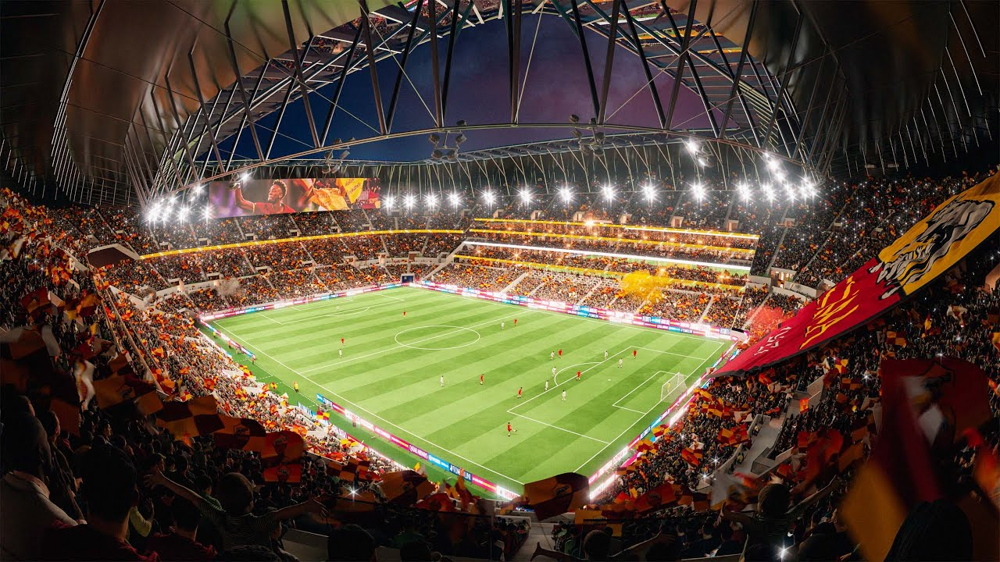

Das Kolosseum
Das größte Amphitheater der römischen Welt wurde im 1. Jahrhundert n. Chr. eröffnet. Einst fanden hier Gladiatorenkämpfe und öffentliche Spektakel statt.
Ein Spaziergang durch Rom ist eine Reise durch die Zeit: Zwischen antiken Säulen, barocken Plätzen und lebhaften Gassen begegnen sich Vergangenheit und Gegenwart auf Schritt und Tritt.
Rom entdeckenMonumente, Brunnen und Plätze erzählen von den vielen Epochen, die Rom geprägt haben.
Das größte Amphitheater der römischen Welt wurde im 1. Jahrhundert n. Chr. eröffnet. Einst fanden hier Gladiatorenkämpfe und öffentliche Spektakel statt.
Zwischen Tempelruinen und Triumphbögen lag das politische und gesellschaftliche Zentrum des antiken Rom.
Der prachtvolle Brunnen ist berühmt für seine Skulpturen und die Tradition, eine Münze über die Schulter hineinzuwerfen.
Seine gewaltige Kuppel und die kreisrunde Öffnung in der Mitte machen den antiken Tempel bis heute zu einem besonderen Bauwerk.
Im unabhängigen Staat Vatikanstadt steht eine der bedeutendsten Kirchen der Welt – mit Werken von Künstlern wie Michelangelo.
Cafés, Straßenkünstler und barocke Brunnen machen diesen lang gestreckten Platz zu einem beliebten Treffpunkt.
Rom war Zentrum eines Weltreichs, Sitz der Päpste und wurde schließlich Hauptstadt des vereinten Italiens. Die Spuren dieser Geschichte liegen oft nur wenige Schritte auseinander.
Der Legende nach gründet Romulus die Stadt. Historisch entwickelte sich Rom aus Siedlungen auf den Hügeln am Tiber.
Nach dem Ende der Königsherrschaft entsteht die Römische Republik, die ihre Macht im Mittelmeerraum stetig ausbaut.
Unter den Kaisern wird Rom zum Zentrum eines riesigen Reiches. Straßen, Recht und Baukunst prägen Europa bis heute.
Rom wird Teil des Königreichs Italien und kurz darauf dessen Hauptstadt – eine Rolle, die die Stadt bis heute innehat.
Antike Bauwerke, Renaissance-Kunst und barocke Fassaden bilden ein einzigartiges Freiluftmuseum. Museen und Galerien ergänzen den Rundgang durch die Stadt.
Auf den Plätzen treffen sich Einheimische und Gäste. Religiöse Feierlichkeiten, Konzerte und saisonale Veranstaltungen bringen die Stadt zusammen.
Typische Gerichte wie Carbonara, Cacio e pepe und supplì zeigen, wie viel Geschmack in einfachen Zutaten steckt. Zum Abschluss darf ein Gelato nicht fehlen.
Rom ist die Heimat zweier großer Fußballvereine: AS Roma und SS Lazio. Ihre Fans füllen das Stadio Olimpico, das beide Clubs für ihre Heimspiele nutzen.
Wenn die beiden Mannschaften im Derby della Capitale aufeinandertreffen, wird die Rivalität der Stadt besonders spürbar. Doch auch Rugby, Basketball und Leichtathletik haben in Rom ihren Platz.

